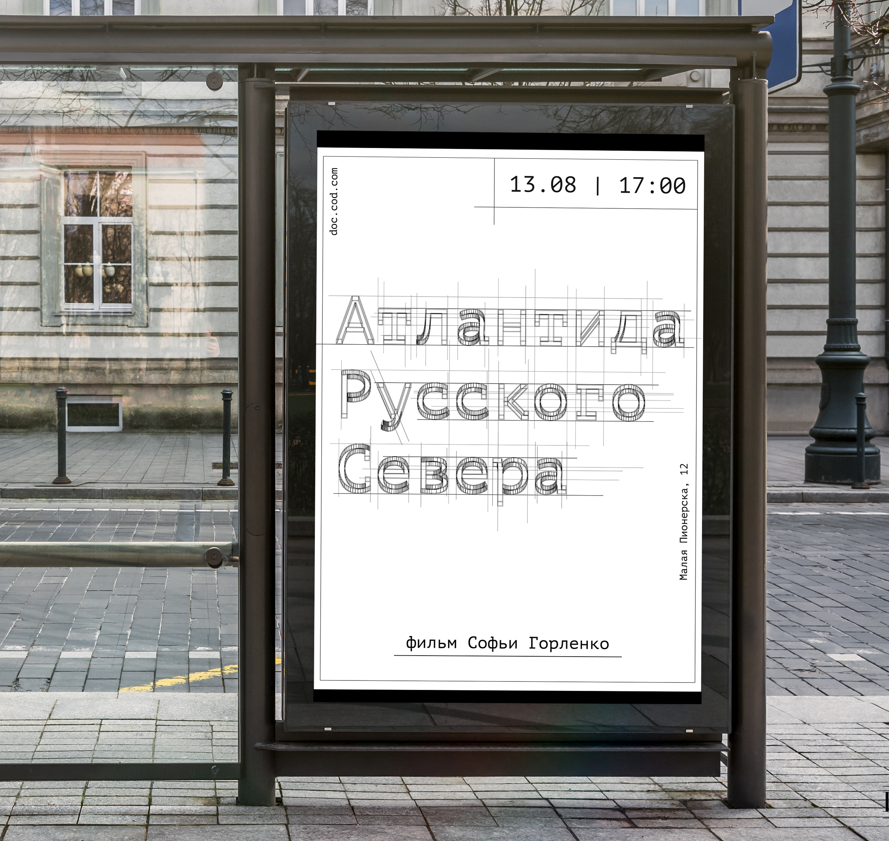
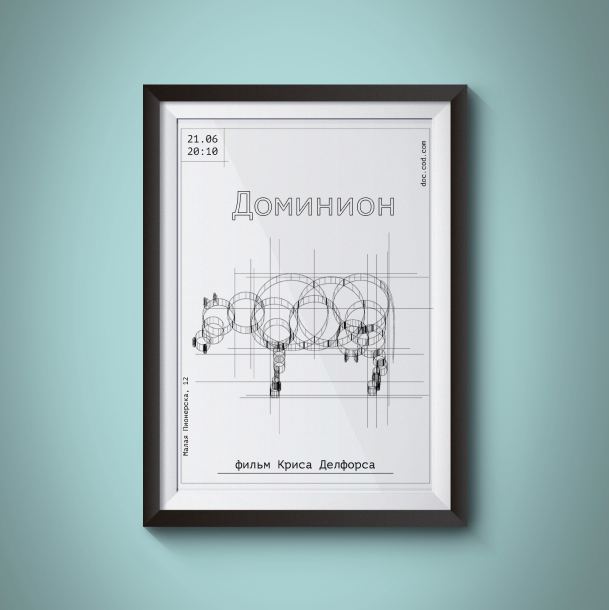

Работа над созданием фирменного стиля к проекту началась с создания плакатов, так как это неотъемлемая часть любой сценической площадки.
Основой стиля стала метафора чертежа, потому что именно чертеж помогает выявить самое главное в конструкции. Часто документальные спектакли и фильмы стремятся обнажить социальные конструкты, суть происходящих нас событий.
 Разработка логотипа в контексте чертежной стилистики стала интересной задачей, поскольку шла борьба между слижком детализированным изображнием (не свойственным для лого) и сохранением эффекта прочерченной конструкции.